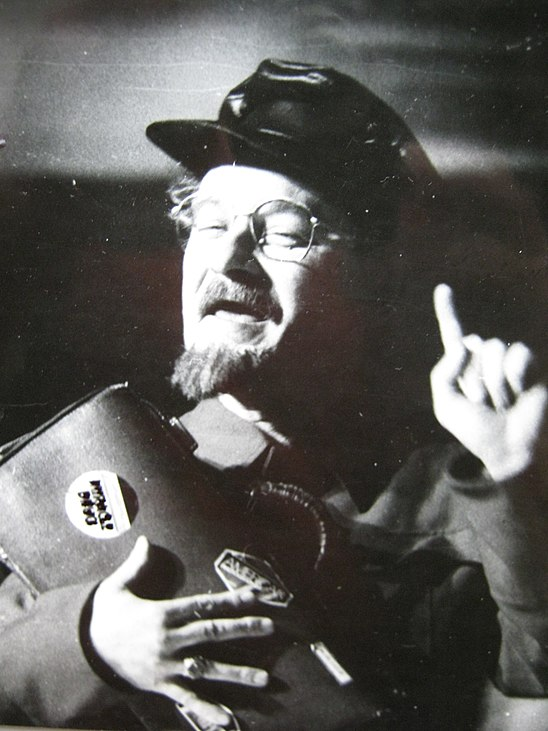

«Сказ о солда́те и Бессме́ртном Коще́е» — спектакль в жанре музыкально-поэтической притчи, поставленный Геннадием Егоровым на сцене Санкт-Петербургского драматического театра «Патриот» РОСТО2 по пьесе известного русского писателя и драматурга Василия Белова «Бессмертный Кощей»
В 1990 году в Ленинграде был открыт новый драматический театр «Патриот»4, художественным руководителем-директором которого стал Геннадий Егоров5. Одним из первых в театре был поставлен спектакль «Сказ о солдате и Бессмертном Кощее» по пьесе крупнейшего русского прозаика Василия Белова «Бессмертный кощей» Используя персонажи языческой мифологии и фольклорные мотивы, Василий Белов написал поэтическую драму с философским и публицистическим смыслом Режиссёр спектакля Геннадий Егоров трансформировал фольклорные образы и поставил сатирическую историю о бездумном и хищническом отношении людей к животворящей, вечно обновляющейся природе8.
Премьера спектакля «Сказ о солдате и Бессмертном Кощее» состоялась на сцене Санкт-Петербургского драматического театра «Патриот» РОСТО9 20 декабря 1990 года
Появление театра, сознательно ориентирующегося на высокие традиции отечественной сцены, производит самое отрадное впечатление. Спектакль в постановке художественного руководителя театра Г. Егорова от начала до конца смотрится с неослабевающим интересом. Нет в нём натужной вычурности, ложного глубокомыслия, нет конъюнктурной оглядки. Всё продиктовано желанием понять смысл пьесы
В первом действии события разворачиваются неторопливо. В лесу вольготно живёт «лесная нечисть»: Баба-Яга, Леший, Кикимора, Водяной, Русалка, воплощающая в спектакле представления о жизни природы, её таинственной, одухотворенной прелести, красоте, силе. Кажется, ничто не может разрушить гармонию людей и природы. Даже Смерть, которая также является персонажем притчи — не противоречит естественному ходу вещей. Она — конец и начало в природном круговороте явлений
Драматизм образа Смерти состоит в том, что всё живое на Земле рождается и спокойно умирает, и только наделённый сознанием человек держится за жизнь и через это нередко становится игрушкой злых сил. Но сейчас умиротворённая Смерть тоже не проявляет своего норова. Она мирно похрапывает в избушке Бабы-Яги, которая является в спектакле хранительницей леса и оберегает живую природу. Ситуацию этой всеобщей гармонии меняет отставной Солдат, который случайно забрёл в лесную глушь. Солдат, известное дело, служит тому, кто в данную минуту приказывает14. Оттого и вся трагичность этого персонажа. Вопреки договору и запретам Бабы-Яги, поддавшись соблазнам Кощея, Солдат пропускает его в лес, что и становится причиной беды, постигающей и его самого, и обитателей лесного царства
Штатный набор кощеевых соблазнов — вино, карты и «подсовывание кикимор» — поначалу для солдата выглядят и вовсе безобидно. Но вкрадчивому и хитрому Кощею удаётся обманом напоить отставного солдата допьяна. И вот уже Кощей воцаряется в лесу, заводит свои порядки, распоряжается его обитателями. Уже и Баба-Яга ходит в лес по ягоды только по пропуску, а добродушная Кикимора в красной косынке энергично и подобострастно прислуживает Кощею. В результате покоряются все, кроме Лешего да продолжающей своё мудрое ворчание Бабы-Яги. Кощей (В. Горбунов) — центральный персонаж притчи7. Он вступает в сделку со Смертью (Т. Пилецкая) и становится вечным, бессмертным15. Правда, на определенном условии Смерти: «Что ж, будешь жить, пока ты полон злобы, пока душа пропитана неправдой и ненависть ворочает мозгами, подогревая ложь и клевету. Но ты умрёшь при первом послаблении…»3. Такое условие Кощею не в тягость: он не испытывает никаких побуждений к добру
Во втором действии от былой идиллии не остаётся и следа. Рощи вырублены, реки повёрнуты вспять. Все человеческие пороки возведены в степень. Благодаря усилиям Кощея в дремучей глуши устроен, наконец, «цивилизованный порядок». На месте леса оказывается вырубленная делянка с загаженной мёртвой водой. Избушка Бабы-Яги стала кутузкой16. Не слышно ни журчания ручья, ни шелеста листвы, ни пения птиц. Здесь царствует забывшая о здравом смысле «дурь» и неприятная зловещая «морока». Жители леса живут по ранжиру и мыслят по указке как Кикимора (Т. Кудрявцева), а некоторые, как Водяной (В. Чемезов), потеряв индивидуальность, предстают во всей глубине своего нравственного падения. Кощей создал командно-административной систему
мбиции Кощея непомерны: ему надо, во что бы то ни стало переиначить всю лесную жизнь, научить его обитателей «жить, как люди». Для покорения тех, кто слабее и истребления непокорных, Кощей разжигает в лесу невиданную ранее вражду. «Моя звезда восходит над лесами! Она горит, горит и не сгорает, как не сгорает ненависть моя!»3. Общего наваждения избегает только Леший (Б. Маслов), не признающий кощеева порядка и остающийся самим собой. Именно поэтому он приговорен.
Смертельная схватка Лешего и Солдата (Ю. Оськин), служащего теперь Кощею, — лишь начало возможной войны, новая искра в готовом вспыхнуть пожаре. Особенно ярко звучит монолог Смерти о предстоящей войне, которая «с часу на час таёжным палом покатится по свету. И всем слезам обманутого мира того огня уже не потушить»3. Предчувствуя кровавый пир и богатую добычу, Смерть в самозабвении вещает: «Какое море крови разольётся, какая ширь! О, сколько их умрёт!»3. Монолог Смерти звучит насмешливым и грозным торжеством над неразумными людьми, не умеющими оценить в должной мере ни жизнь, ни смерть. Но Леший, защищающий свою любовь, свободу и достоинство, их цену знает18. Для него не мыслима жизнь под игом оскорбительного рабства и не страшна Смерть, так как она всегда и всюду подстерегает живых, над мёртвыми она не властна. И вот Лешего убивают. Надо бы оживить его, да иссякли источники живой воды — кругом только одна мертвая. Изменился лес13. Русалка (М. Петрова) вопрошает: «Куда девались её любимые берёзы? И почему вода в речках потекла вспять?»3. Лишь в конце спектакля Солдат, охраняя чужое царство, начинает крепко задумываться. Гибель Лешего оборачивается, однако, не войной, а общим отрезвлением. Пелена обмана спадает с глаз, злые чары исчезают, и Кощей предстаёт перед недавно покорными и вдруг прозревшими подданными в своём жалком убожестве19. Спасаясь от общего негодования, Кощей вынужден спрятаться в той самой кутузке, в которую прежде загонял других. Притязания Кощея на безраздельное господство рассыпаются в прах. В финале спектакля Баба-Яга (В. Балабина) отправляется на поиски родника с живой водой для воскрешения леса1112.